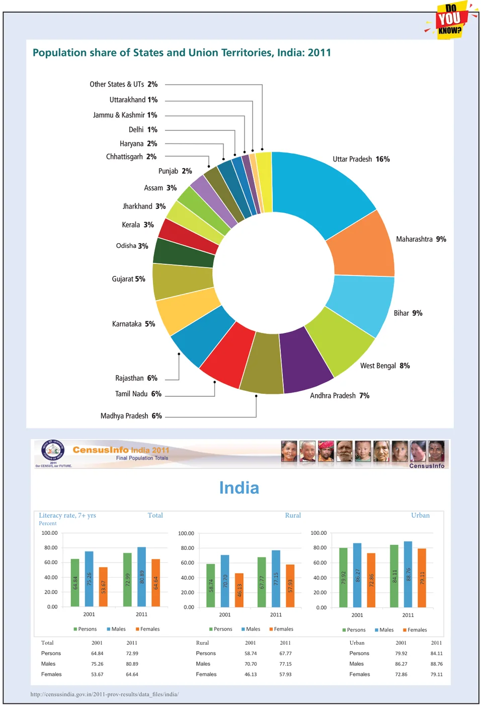
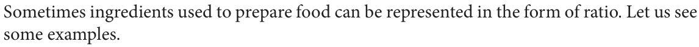
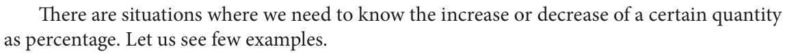
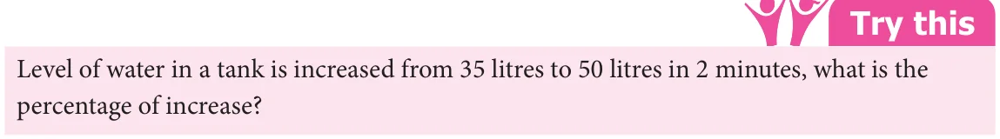
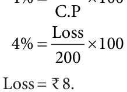

We have seen how percentage are used in comparison of quantities. We also learnt to convert fractions and decimals to percentage and vice-versa. Now we shall see some situations that use percentage in real life such as 5% of income is allotted for saving; 20% of children’s picture book is coloured green; a book distributor gets 10% of profit on every book sold by him. What can we conclude from these situations.
Percentage as a value
Example 2.14 There are 50 students in a class. If 14% are absent on a particular day, find the number of students present in the class.
Solution
Number of students absent on a particular day \(= 14\) % of 50
\(= \frac{14}{100} \times 50= 7\)
Therefore, the number of students present \(= 50 - 7 = 43\) students.
Example 2.15 Kuralmathi bought a raincoat and saved ₹ 25 with discount of 20%. What was the original price of the raincoat?
Solution
Let the price of the raincoat (in ₹ ) be P. So 20% of \(P = 25\)
\(\frac{20}{100} P = \frac{25 \times 100}{20} =125\)
\(\times P = 25\)
Therefore, the original price of the raincoat is ₹ 125.

Example 2.16 An alloy contains 26 % of copper. What quantity of alloy is required to get 260 g of copper ?
Solution:
Let the quantity of alloy required be Q g
Then 26 % of \(Q =260 g \frac{26}{100} \times Q = 260 g Q = \frac{260 \times 100}{26} g Q = \frac{26000}{26} g Q = 1000 g\)
Therefore, the required quantity of alloy is 1000 g.
Ratios as percentage

Example 2.17 Kuzhal’s mother makes dosa by mixing the batter made from 1 portion of Black gram with 4 portions of rice. Represent each of the ingredients used in the batter as percentage.
Solution
Representing ingredients used in the batter as ratio, we get, rice : Black gram \(= 4 :1\) Now, the total number of parts is \(4 +1= 5\). That is, \(\frac{4}{5}\) portion of rice is mixed with \(\frac{1}{5}\) portion of Black gram. Thus, the percentage of rice would be \(\frac{4400}{55} \times 100%=\) % \(= 80%\) The percentage of Black gram would be \(\frac{1100}{55} \times 100%= %= 20%\)
Example 2.18 A family cleans a house for pongal celebration by dividing the work in the ratio 1:2:3. Express each portion of work as percentage.
Solution
The total number of parts of the work is \(1+ 2+ 3= 6\)
That is, the work is divided into 3 portions as \(\frac{12}{66}\) , and \(\frac{3}{6}\) .
Thus, the percentage of portion of work would be \(1 \times 100%= 100 %= 16 2\) %
\(\frac{1}{6} 6 6 3\)
th
Similarly, the percentage of portion of work would be \(2 \times 100% = 200\) % \(= 331%\)
\(\frac{2}{6} 6 6 3\)
th
th
Similarly, the percentage of \(\frac{3}{6}\) portion of work would be \(\frac{3300}{66} \times 100%=\) % \(= 50%\)
Increase or decrease as Percentage

Example 2.19 During Aadi sale the price of shirt decreased from ₹ 90 to ₹ 50. What is the percentage of decrease.
Solution
Original price = the price of the shirt before Aadi month Amount of change = the decrease in the price \(= 90 - 50 =\) ₹ 40 Therefore, the percentage of decrease = Amount of change \(\times 100\)
\(= \times 100= \frac{40400}{909} = 44 9 4\) %
Example 2.20 The number of literate persons in a city increased from 5 lakhs to 8 lakhs in 5 years. What is the percentage of increase?
Solution
Original amount = the number of literate persons initially \(= 5\) lakhs Amount of change = increase in the number of literate persons \(= 8 - 5 = 3\) lakhs percentage of increaseTherefore, the = Amount of changeOriginal amount \(\times 100\)
\(\frac{3}{5}\)
\(= \times = 60%\)

Profit or Loss as a Percentage
We have learnt already profit and loss of items. Now we will see how a profit or loss can be converted to percentage. That is, to find the profit % or loss %, we will see some examples. Example 2.21 A shopkeeper bought a chair for ₹ 325 and sold it for ₹ 350. Find the profit percentage.
Solution
Profit per cent \(= \frac{Profit}{C.P} \times 100\)
\(= 25 \times 100= 100 = 7 9\) %.
Example 2.22 A T-shirt bought for ₹ 110 is sold at ₹ 90. Find the loss percentage.
Solution
Cost price of T-shirt is ₹ 110 and Selling price is ₹ 90. So, the loss is ₹ 20 Hence, for ₹ 100 the loss is \(\frac{20}{110} \times 100 = \frac{2002}{1111} =18\) % .
Example 2.23 An item was bought at ₹ 200 and sold at a loss of 4 %. What is its selling price?
Solution
To find the Loss, Loss per cent \(= \frac{Loss}{C.P} \times\) % Loss

S.P C.P Loss
Hence the selling price of the item is ₹ 192.
The world's population is growing by 1.10 % per year. 50.4 % of the world's population is male and 49.6 % is female.